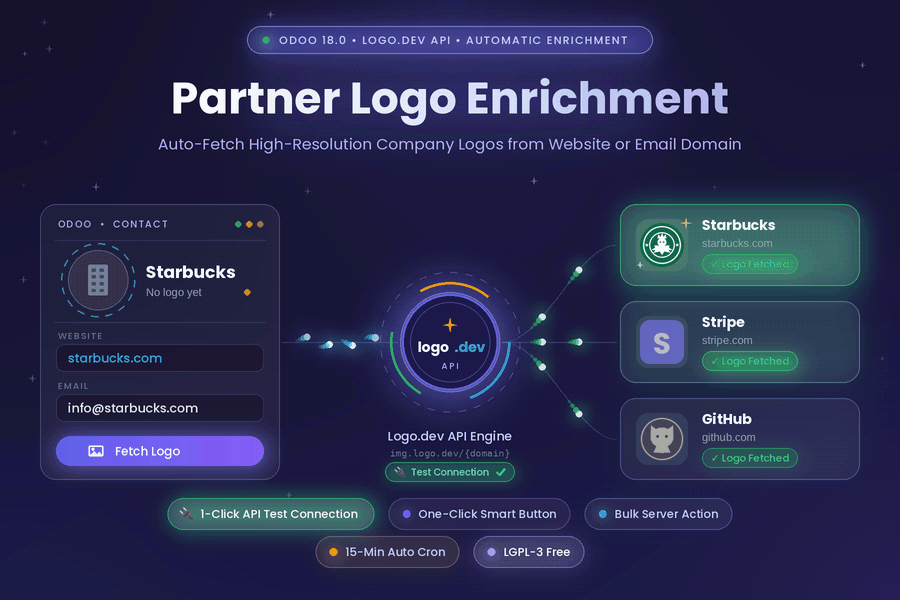
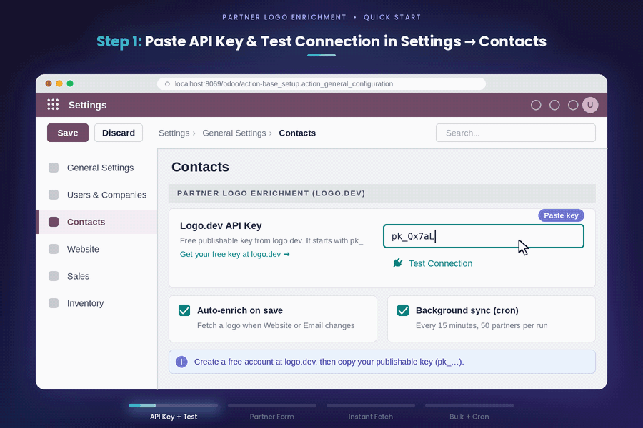
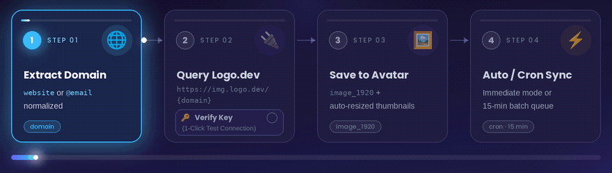

Automatically fetch and enrich Odoo 18 partner records with high-resolution company & brand logos from Website or Email domains — with a 1-click API connection tester, instant smart button, real-time save hooks, bulk server actions, and a 15-minute background cron queue.
Turn grey placeholder avatars into a vibrant, recognizable address book — automatically and safely.
|
🌐
Smart domain extraction
Extracts and normalizes domains from the
partner’s
website (stripping http://, https://,
www., ports, and URL paths) or falls back to their email domain (@domain.com).
|
🔌
1-Click API “Test
Connection”
Verify your Logo.dev Publishable Key
(
pk_...) right inside Settings → General Settings → Contacts.
Auto-saves your key and shows a live green connection toast.
|
|
⚡
Dual execution modes
Run in non-blocking Background
Cron Mode (every 15 minutes in batches of 50) or enable Immediate Logo
Fetch in Settings to enrich contacts the instant they are saved.
|
🖼️
One-click “Fetch Logo”
button
Adds a native Fetch Logo
stat button directly inside the Partner Form button box whenever a website or email is present —
with instant toast feedback and automatic view reload.
|
|
📦
Bulk server action
Select dozens or hundreds of contacts in
the Partner List view and click Action → Fetch Partner Logos to enrich existing
records in one batch with a live summary toast.
|
🛡️
404 infinite-loop
protection
Tracks lookup status (
pending,
fetched, not_found, failed) and clears the pending flag on
HTTP 404 responses so unknown domains are never retried endlessly.
|
|
🔒
Preserves existing custom
avatars
Automatic
create(), write(),
and cron hooks only fetch a logo when image_1920 is empty — never overwriting photos
uploaded manually by your team.
|
🔄
Auto-resized Odoo
thumbnails
Writes directly to Odoo’s native
image_1920
field on res.partner, so image.mixin automatically generates image_1024,
image_512, image_256, and avatar_128.
|
From testing your Logo.dev API key in Settings to one-click and bulk partner enrichment.

Four automated steps from domain parsing to high-resolution avatar generation.

|
1. Extract
Reads
website first (or falls
back to email) and strips protocols, www., ports, and paths to isolate the
clean domain.
|
2. Verify & Query
Uses your verified
pk_... key
to call https://img.logo.dev/{domain} with format=png,
size=200, and a 10s timeout.
|
3. Enrich
Base64-encodes the PNG binary into
image_1920,
automatically computing all Odoo avatar thumbnails.
|
4. Track Status
Sets
logo_fetch_status to
fetched, not_found, or failed and clears logo_fetch_pending.
|
Engineered for real production databases — what actually happens under the hood.
Simple configuration under Settings → General Settings → Contacts.
|
1
|
Install the module
Install Partner Logo
Enrichment (Logo.dev) (
partner_logo_enrichment) from the Odoo Apps menu.
|
|
2
|
Copy your free Logo.dev Publishable
Key
Sign up for free at logo.dev, open API
Keys, and copy your Publishable Key (starts with
pk_...).
|
|
3
|
Paste & click “Test Connection” in
Settings
Go to Settings → General
Settings → Contacts, paste your
pk_... key into Logo.dev API
Key, and click 🔌 Test Connection to automatically save and verify your
key with a green toast notification.
|
|
4
|
Enrich any partner
Open any contact, enter a Website
(e.g.
starbucks.com) or Email (e.g. info@stripe.com),
and click the Fetch Logo smart button (or let auto-sync handle it).
|
Click any question below to expand the answer.
pk_... key and click the 🔌 Test
Connection button right underneath the input field. It automatically persists your key, performs a
live test request against img.logo.dev, and shows a green “Connection
Successful” toast notification.
starbucks.com or
https://www.stripe.com) or an Email containing a valid domain
(e.g., info@starbucks.com or user@gmail.com). Website is checked first; if empty,
the email domain is used.
pk_...). Logo.dev’s image CDN endpoint (https://img.logo.dev/{domain}?token=pk_...)
is designed specifically for publishable tokens.
create(), write(), and the 15-minute cron job strictly checks if not
partner.image_1920 first. Only clicking the manual Fetch Logo button or running
the bulk action intentionally refreshes the image.
logo_fetch_status
= 'not_found' and logo_fetch_pending = False. This ensures the background cron job never
wastes API calls retrying missing domains in an infinite loop.
website and email
fields
res.partner.image_1920
soft_reloadConnect for free customizations, collaboration, or explore more Odoo 18 apps from the same author.
I build and publish open-source Odoo 18 apps — Contacts enrichment, Point of Sale tools, and login security. All of them are on the Odoo Apps Store and in one GitHub repository.
|
Email OTP Login
Password-less login for
Odoo 18 with hashed one-time email codes, rate limiting, group policies, and a live security
dashboard.
View
on Odoo Apps →
|
POS Product Stock &
Price Display
Display dynamic sales
price and real-time, location-specific stock on-hand directly on the Point of Sale product card with
an out-of-stock blocker.
View
on Odoo Apps →
|
|
POS User Access
Restriction
Restrict POS users to
specific Point of Sale shops or registers in Odoo 18 with enforced record rules.
View
on Odoo Apps →
|
POS Auto Lot/Serial
Selection
Automatically assigns
the oldest lot/serial (FEFO/FIFO) in Point of Sale without popup interruptions.
View
on Odoo Apps →
|
Partner Logo Enrichment (Logo.dev) · v18.0.1.0.0 · LGPL-3 · © Gardas Udaykiran